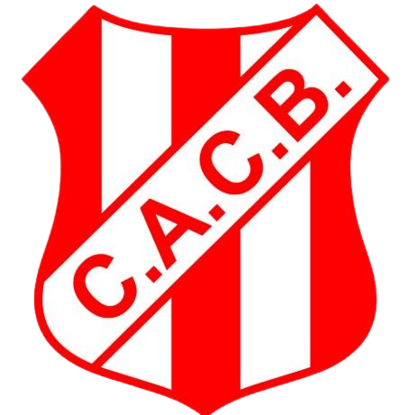

HISTORIA

El Club Atlético Costa Brava fue fundado el 21 de agosto de 1932 por un grupo de vecinos del entonces denominado barrio “Las Ranas”, actualmente conocido como Barrio Este, en la ciudad de General Pico, La Pampa. Desde sus comienzos, la institución estuvo estrechamente vinculada con la comunidad y se convirtió en un espacio de encuentro para los vecinos del sector.
Durante sus primeros años, el fútbol fue la principal actividad del club y rápidamente comenzó a participar en las competencias deportivas de la región. Con el crecimiento de la institución y de la ciudad, Costa Brava fue adquiriendo mayor importancia dentro del fútbol pampeano y construyendo una identidad propia, reconocida por sus colores, sus jugadores y el acompañamiento de sus simpatizantes.
A lo largo de su historia, el club tuvo una destacada participación en la Liga Pampeana de Fútbol y consiguió numerosos campeonatos. Entre sus primeros títulos se encuentran los obtenidos en 1940 y 1942. Posteriormente, logró nuevos campeonatos durante las décadas de 1970 y 1980, destacándose los títulos de 1971, 1972, 1978, 1979 y 1986.
Durante la década de 1990, Costa Brava atravesó otra etapa importante de su historia deportiva. El equipo consiguió los campeonatos de la Liga Pampeana de 1990, 1991 y 1994, además de obtener el Torneo Provincial en 1991. Posteriormente, volvió a conquistar este torneo en 1999 y 2000, ampliando su trayectoria y reconocimiento dentro del fútbol de La Pampa.
En los últimos años, el club continuó siendo protagonista de las competencias regionales. Entre sus logros más recientes se encuentran los campeonatos de la Liga Pampeana obtenidos en 2021, 2022, 2023 y 2024, consolidando nuevamente a Costa Brava como uno de los principales clubes de General Pico.
Además del fútbol de Primera División, la institución desarrolla actividades destinadas a la formación de niños y jóvenes, promoviendo la práctica deportiva desde edades tempranas. Las divisiones inferiores y el fútbol infantil cumplen un papel importante en la formación de nuevos jugadores y en la transmisión de los valores del club.
Con el paso de las décadas, Costa Brava también se convirtió en un importante espacio social para sus socios, deportistas y familias. Sus instalaciones y actividades permiten que personas de diferentes edades participen de la vida institucional, fortaleciendo el vínculo entre el club y la comunidad de General Pico.
Con más de 90 años de trayectoria, el Club Atlético Costa Brava continúa formando parte de la historia deportiva de General Pico. Su recorrido, sus campeonatos y el trabajo realizado a lo largo de las generaciones lo han convertido en una institución representativa de la ciudad y del fútbol pampeano.